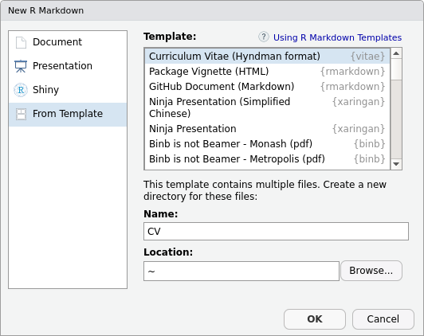

/ˈviːteɪ/

Templates and tools for making a Résumé/CV
The vitae package makes creating and maintaining a Résumé or CV with R Markdown simple. It provides a collection of LaTeX templates, with helpful functions to add content to the documents.
Installation
You can install the release version from CRAN.
You can install the development version from GitHub.
This package requires LaTeX to be installed on your computer. If you’re encountering issues, please check that LaTeX is installed. The tinytex package makes it easy to setup LaTeX within R:
Getting started
The vitae package currently supports 5 popular CV templates, and adding more is a relatively simple process (details in the creating vitae templates vignette).
Creating a new CV with vitae can be done using the RStudio R Markdown template selector: 
These templates leverage the strength of rmarkdown to include common information in the YAML header (name, position, social links…) and extended information in the main body. The main body of the CV is written using markdown, and allows for data-driven generation of entries using the *_entries functions. This allows you to import your working history from other sources (such as ORCID, Google Scholar, or a maintained dataset), and include them programmatically into your CV.
For example, the rorcid package can be used to extract Rob Hyndman’s education history:
orcid_data <- do.call("rbind",
rorcid::orcid_educations("0000-0002-2140-5352")$`0000-0002-2140-5352`$`affiliation-group`$summaries
)
#> Registered S3 method overwritten by 'httr':
#> method from
#> as.character.form_file crul#>
#> Attaching package: 'dplyr'
#> The following objects are masked from 'package:stats':
#>
#> filter, lag
#> The following objects are masked from 'package:base':
#>
#> intersect, setdiff, setequal, union
#> education-summary.role-title education-summary.start-date.year.value
#> 1 PhD 1990
#> 2 Bachelor of Science (Honours) 1985
#> education-summary.end-date.year.value
#> 1 1992
#> 2 1988
#> education-summary.organization.name
#> 1 University of Melbourne
#> 2 University of Melbourne
#> education-summary.organization.address.city
#> 1 Melbourne
#> 2 MelbourneThe package provides two types of entries from data, which are detailed_entries and brief_entries. Both functions provide sections for what, when, and with, and the detailed_entries additionally supports where and why. These arguments support operations, so for this example, we have used glue to combine the start and end years for our when input. Excluding any inputs is also okay (as is done for why), it will just be left blank in the CV.
orcid_data$`education-summary` %>%
detailed_entries(
what = `education-summary.role-title`,
when = glue::glue("{`education-summary.start-date.year.value`} - {`education-summary.end-date.year.value`}"),
with = `education-summary.organization.name`,
where = `education-summary.organization.address.city`
)
Additional examples of using this package can be found in the slides presented at ozunconf2018: https://mitchelloharawild.com/vitae/
Examples of using vitae
Add your vitae to the list using a PR.
Please note that the ‘vitae’ project is released with a Contributor Code of Conduct. By contributing to this project, you agree to abide by its terms.